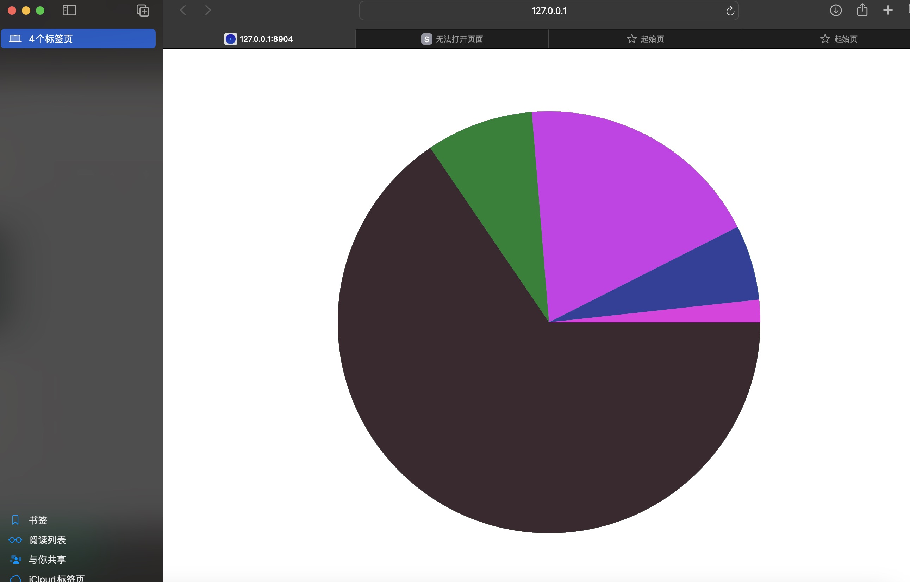
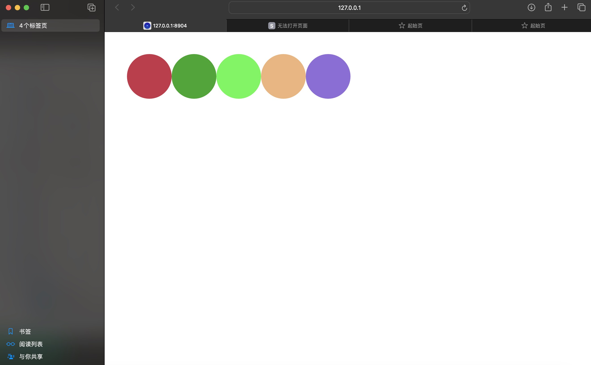
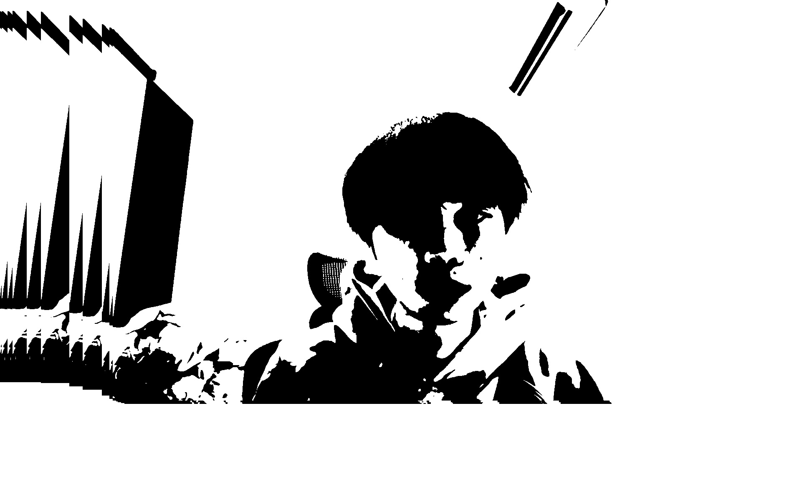
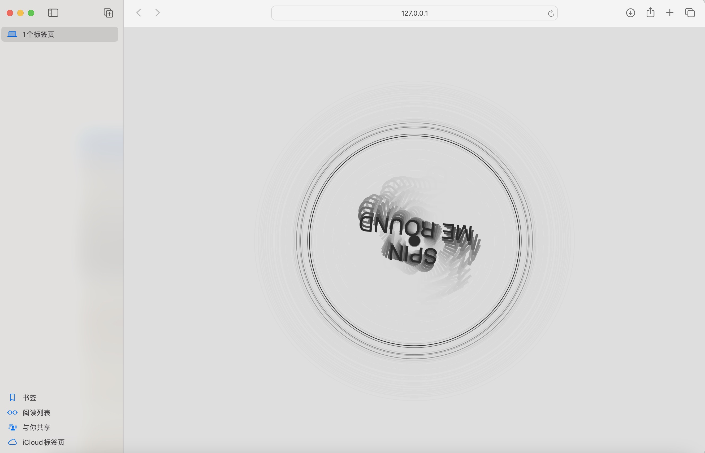
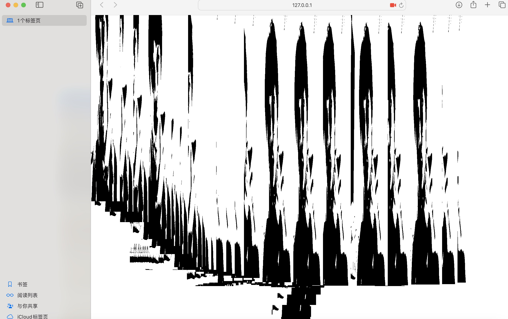
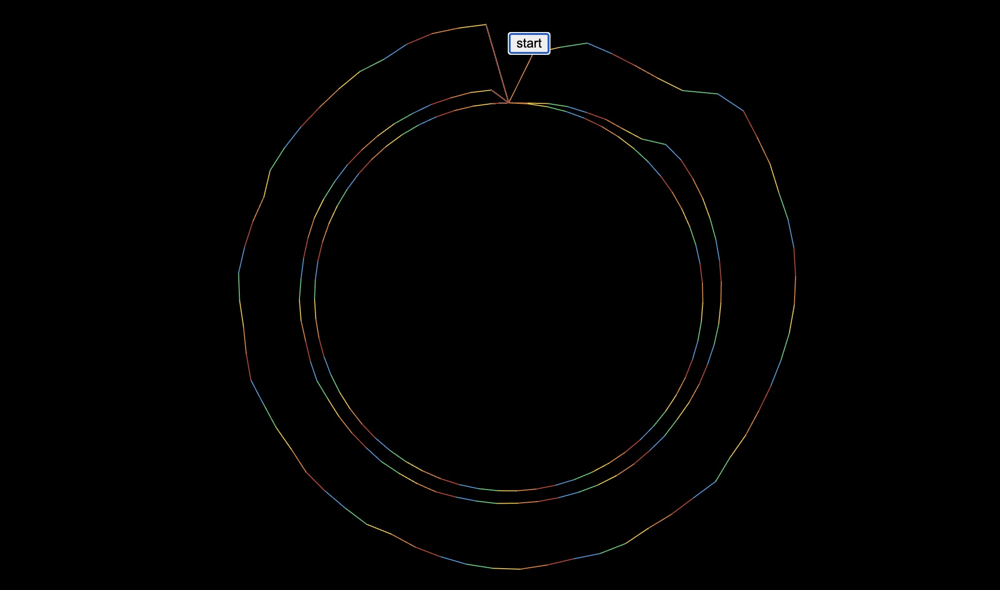
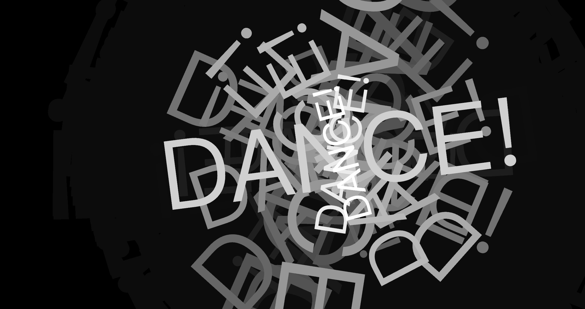

WEEK 6
exercise
Pie Chart
basic 'for loop
Doodle
I drew a black hole

Pointillism
Musical turntable
Paint with Webcam
Mic Circles
Speech (rendered as text on page)
Text spins and 'grows' with volume of loaded sound
a sound code snippet

Improvements to the Webpage
I've adjusted the appearance of the webpage and added some content. Additionally, I've included background music.